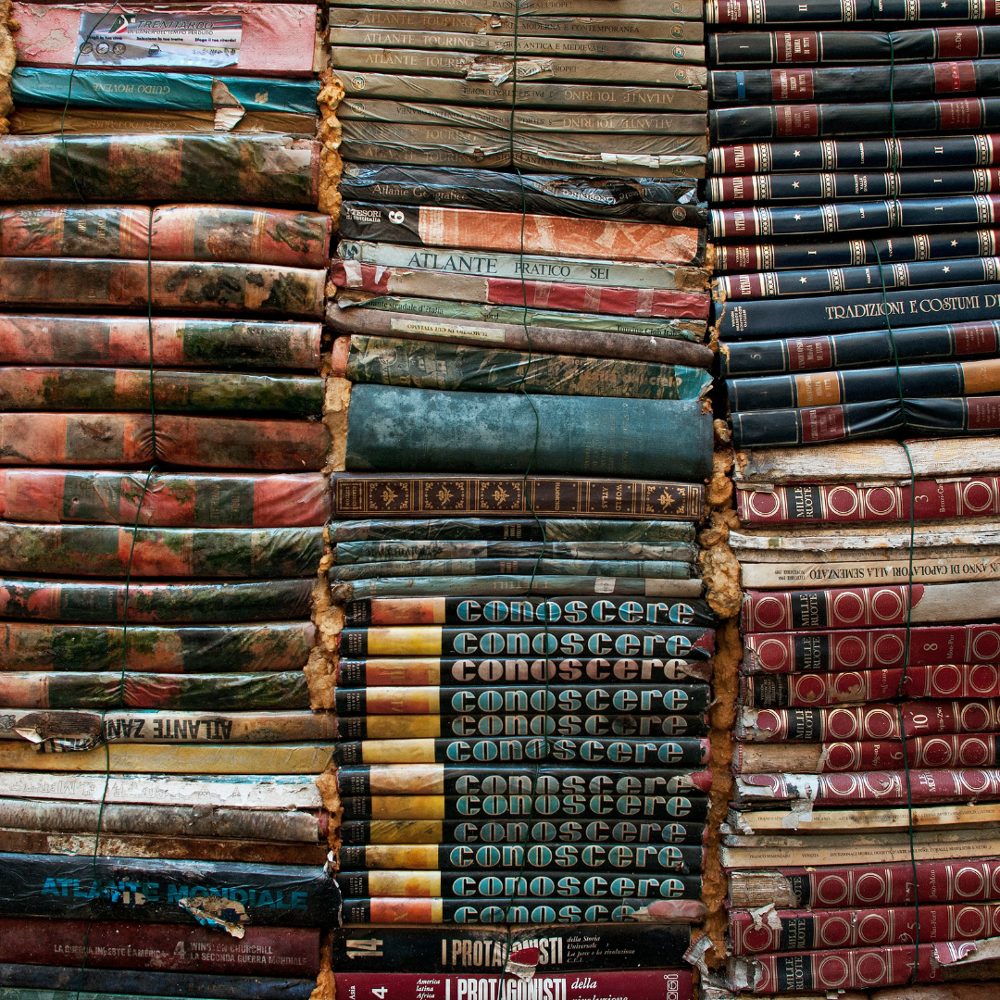
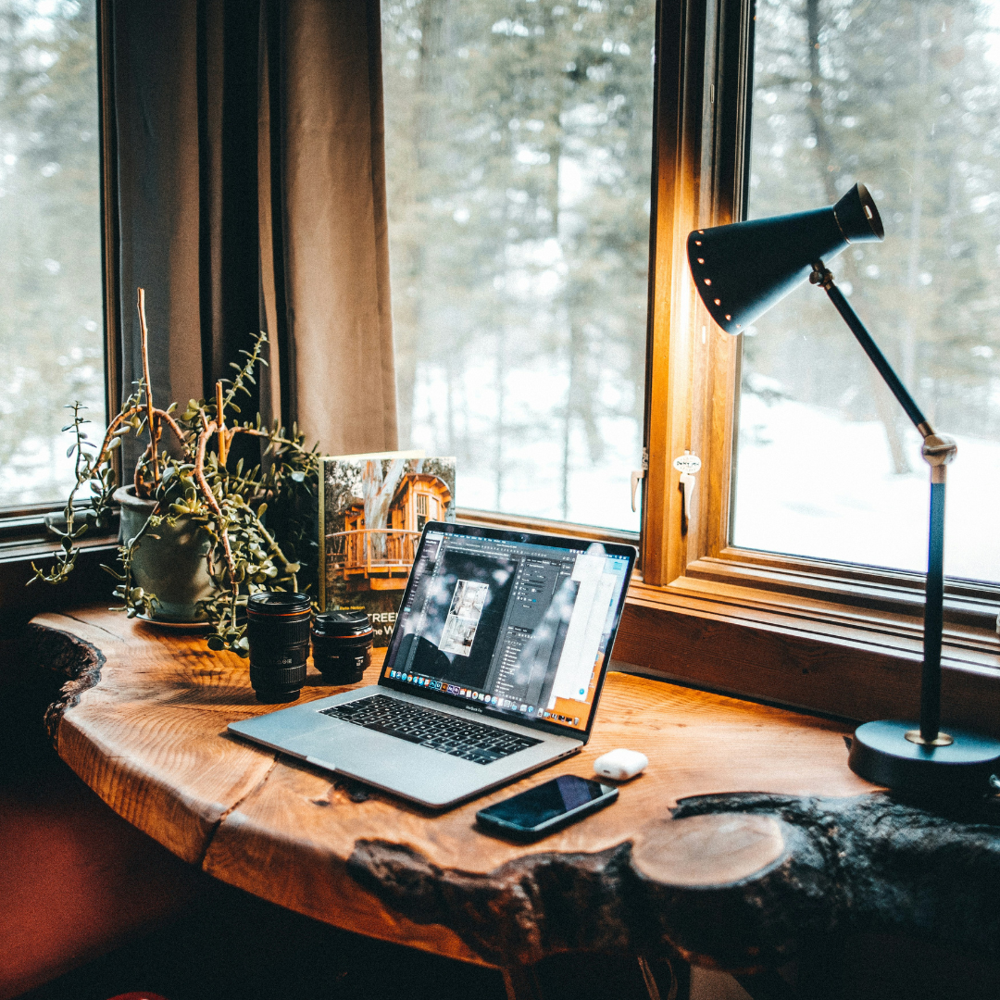

C. M. Goose
Personal Website
Film Studies and English Literature graduate of University of Manchester, 2024. Arts and media enthusiast diving into digital marketing, web development and UX/UI.


Work Experience
- Bartender and waitstaff in UoM Student's Union Bar and Kitchen and Manchester Academy venues.
- Bartender in Turtle Bay Broad Quay.
- Volunteer Social Media Campaign Manager with Volunteering Matters.
- Volunteer Personal Assistant with Volunteering Matters.
- Sales Assistant with WHSmith Cribbs Causeway.
- Retail Assistant with Primark Bristol.
Interests
- Literature, film and theatre, particularly feminist speculative and horror fictions
- Research, education and pursuing knowledge in its many forms
- Local activism, ecological awareness and building meaningful support networks for vulnerable people
- Fibre crafts and sewing, custom clothes repair and upcycling